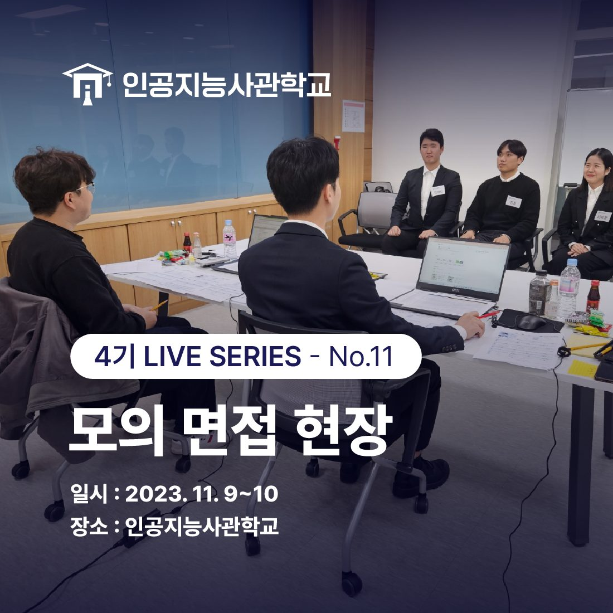
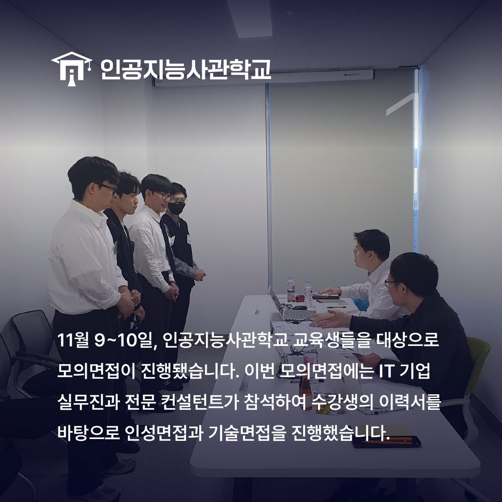
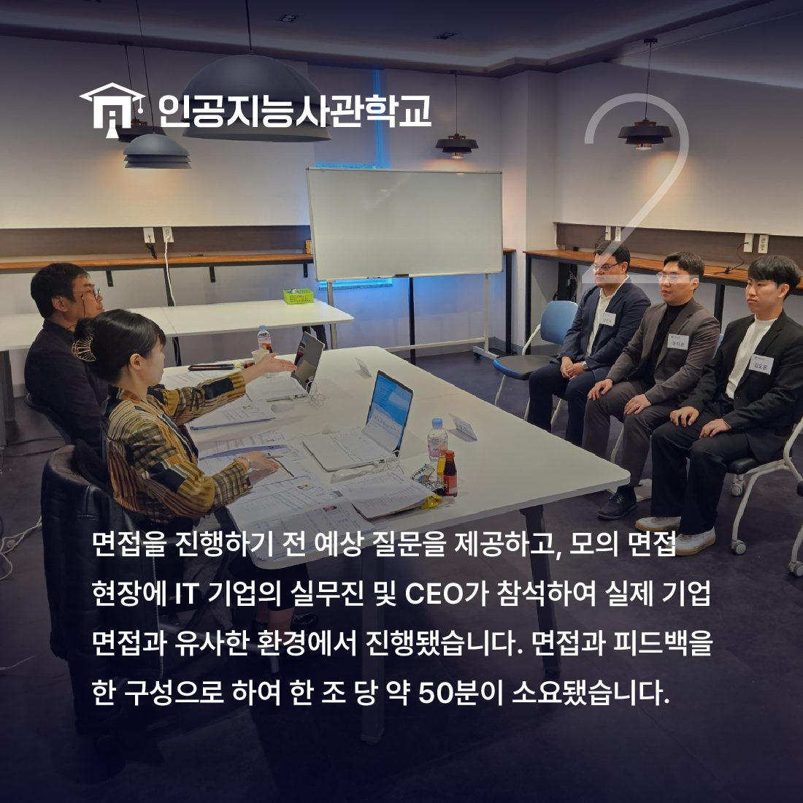
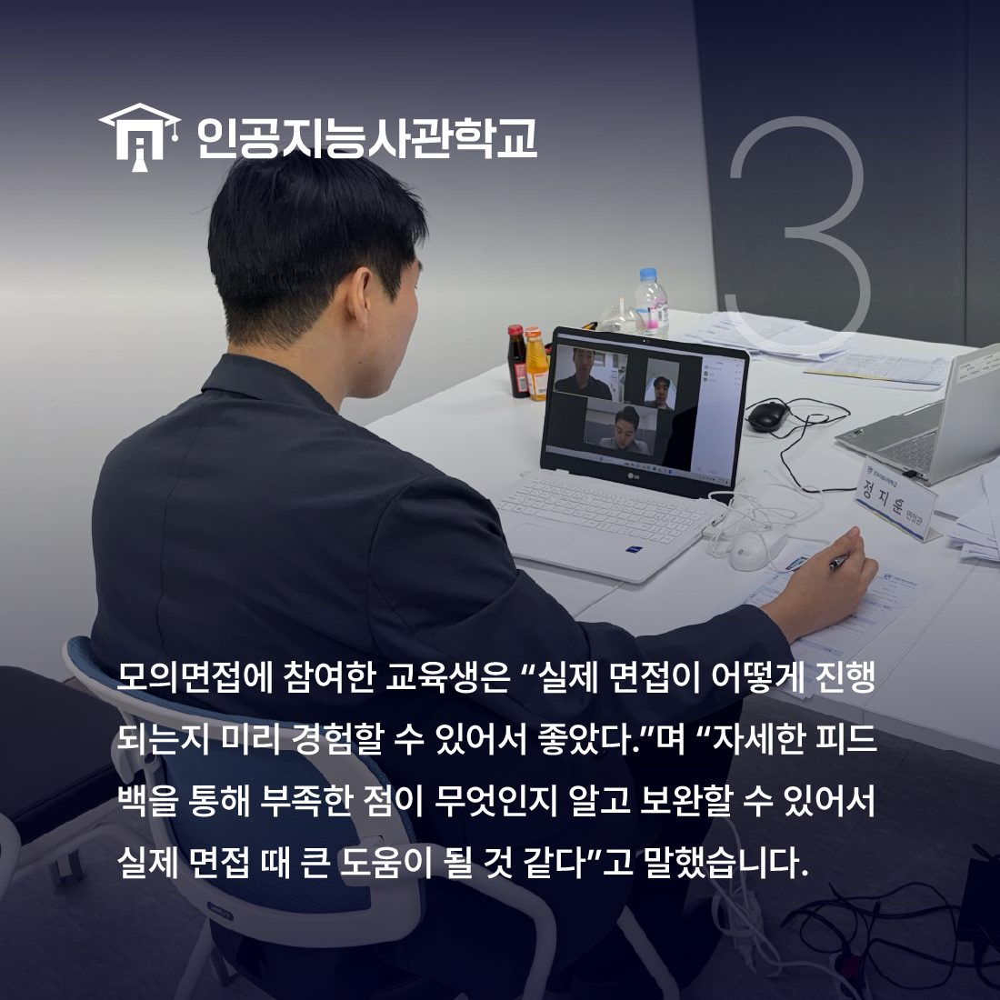
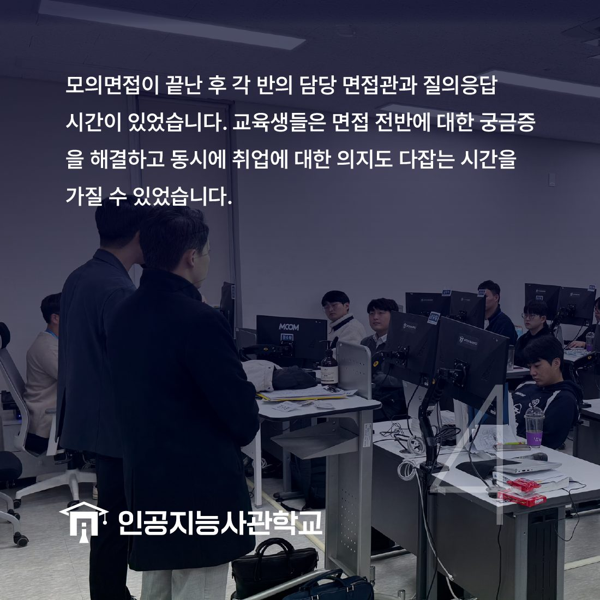

안녕하세요! 인공지능사관학교입니다. 😆

오늘은 11월 9~8일 인공지능사관학교에서 진행한
단체 모의면접에 대해 이야기 해보려고 합니다.

이번 모의면접은 전 교육생을 대상으로
이틀에 걸쳐 진행됐는데요.
IT 기업 실무진과 전문 컨설턴트가
면접관으로 참여하였습니다.

모의 면접 시간은 한 타임 당 총50분으로
면접과 피드백을 하나의 구성으로 진행하였습니다.
면접은 기술면접과 인성면접을 모두 진행했는데요.
IT 기업의 실무진 및 CEO가 참여하여
훨씬 현장감 넘치는 면접 환경을 만들 수 있었습니다.👍

교육생들은 미리 예상 질문을 뽑아 준비하고
실제 면접과 동일하게 이력서 및 면접 복장을 갖추고
모의면접에 진지하게 임했습니다!
면접관도 교육생의 이력서를 미리 확인하고
이를 바탕으로 면접을 진행했습니다.

모든 면접이 끝나고 각 반에서는
담당 면접관과 질의응답 시간을 가졌습니다.
면접 전반에 대한 궁금증도 해결하고
동시에 취업 의지를 다잡을 수 있는 시간이었습니다.

이번 행사에 참여한 교육생은 "실제 면접 현장이
어떻게 진행되는지 미리 경험할 수 있어서 좋았다."고 전하며,
"자세한 피드백을 통해 부족한 점이 무엇인지 알고
보완할 수 있는 좋은 시간이었다."고 덧붙였습니다.